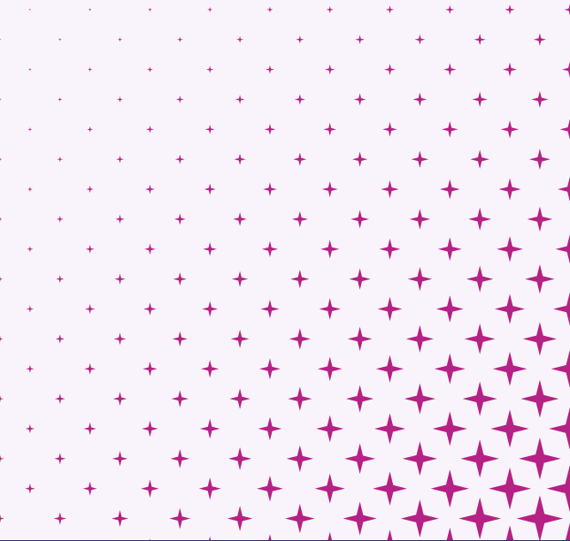

Explore sem limites
Porque o aprendizado é contínuo

Não pare nunca
Se você deseja ter sucesso nos estudos, é fundamental que você adote uma mentalidade de "não pare nunca". Estudar de forma consistente e contínua é a chave para o progresso e a conquista de seus objetivos.

Só volta
Se você parou ou perdeu o ritmo em alguma atividade ou projeto, saiba que nunca é tarde para recomeçar. Às vezes, as circunstâncias podem mudar, ou podemos nos sentir desmotivados ou sobrecarregados.

Siga seu ritmo
Avançar pouco a pouco mantém progresso constante em objetivos, evitando parar ou desistir. Mesmo pequenos passos nos aproximam do destino e motivam a continuidade. Não subestime o poder de cada ação rumo ao objetivo final.
